Chapter 4: Hard Drives, Tape, Optical & Archive Storage¶
Most of the world's data still lives on spinning disks and magnetic tape. This chapter opens up the hard drive — platters, heads, seek times, CMR and SMR, HAMR and MAMR, helium and multi-actuator designs, reliability and the 2026 nearline market — then moves to tape, LTO-10 and tape libraries, optical discs, emerging glass, ceramic and DNA media, cold-storage tiers in the cloud, and the discipline of keeping data readable for decades.
4.1 Inside a Hard Drive: Platters, Heads, Actuator and Spindle¶
A hard disk drive (HDD) stores data as tiny magnetised regions on spinning disks called platters. Read/write heads float a few nanometres above the surface on a cushion of air or helium, swung across the disk by an arm called the actuator. A small controller board turns all this mechanics into a simple block device for the computer.
Think of it like…
A record player where the needle never touches the record, the record spins up to 120 times a second, and the needle can both read and rewrite the grooves.
Real-world example
Jonas, a student technician, opens a dead 4 TB desktop drive in class: two platters, four heads on one actuator arm driven by a voice-coil motor, a spindle motor, and a circuit board with the controller, a DRAM cache and a motor driver. The platters spun at 5,400 rpm — 90 rotations every second.
How it works¶
- Platters coated with a thin magnetic layer spin on a spindle motor at 5,400-7,200 rpm (up to 15,000 in old performance drives).
- Each platter surface has its own head on a slider that flies a few nanometres above it.
- A voice-coil actuator swings all the heads together to the right track, guided by servo marks on the disk.
- Writing: the head's write pole magnetises tiny regions in one of two directions.
- Reading: a magnetoresistive (TMR) sensor detects those directions as changes in electrical resistance.
- The controller, cache and firmware handle error correction, defect remapping and the SATA or SAS interface.
Who uses it
Data-centre technicians, storage engineers, data-recovery specialists and anyone building NAS or backup systems.
Key takeaway
Learn the parts list — platters, spindle motor, heads and sliders, actuator arm and voice-coil motor, servo, controller and cache — and remember the heads never touch the platters in normal operation.
Going deeper
- Platter substrates are aluminium alloy or glass; glass is stiffer and smoother, allowing thinner disks — Toshiba plans glass platters to fit twelve disks in a 40 TB-class drive in 2027.
- Thermal fly-height control heats a tiny element in the slider so the head bulges toward the disk only while reading or writing, keeping head-to-media spacing at just a few nanometres.
- Modern readers use tunnelling magnetoresistance; two-dimensional magnetic recording (TDMR) adds multiple reader sensors per head so narrower, more tightly packed tracks can be read reliably.
- Servo patterns written at the factory sit in wedges around each surface; the drive reads them many thousands of times per second to keep the head centred on tracks only tens of nanometres wide.
- Most high-capacity drives add micro-actuators — piezoelectric elements near the head — for fine positioning on top of the coarse voice-coil motor, known as dual- or triple-stage actuation.
- Load/unload ramps park the heads off the platters when idle or powered off; drives specify a maximum number of load/unload cycles, often hundreds of thousands.
Common mistakes & misconceptions
- Opening a drive outside a cleanroom to 'fix' it: a dust particle is far larger than the flying height and can crash the heads.
- Thinking hard drives are obsolete: in 2026 they still hold most of the data in hyperscale clouds, at far lower cost per terabyte than flash.
- Moving or knocking a running drive: shocks during operation can make the heads strike the platter.
Try it: Spot spinning disks and their speed¶
# Linux: ROTA=1 means a rotating hard drive
lsblk -d -o NAME,MODEL,ROTA,SIZE
# Windows PowerShell
Get-PhysicalDisk | Select-Object FriendlyName, MediaType, SpindleSpeed, Size
Key memory types, devices, interfaces, standards & tools¶
| Name | What it does | Example |
|---|---|---|
| Platter HDD makers (Seagate, Western Digital, Toshiba) and media suppliers · Component · Current · Beginner |
Rigid disk coated with a thin magnetic recording layer; 2026 nearline drives contain about ten of them. | Jonas's 4 TB desktop drive had two platters; a 2026 30 TB-plus data-centre drive has around ten. |
| Spindle motor (fluid-dynamic bearing) HDD makers · Component · Current · Intermediate |
Motor spinning the platters at constant speed on an oil-film bearing that is quiet and long-lasting. | A NAS owner notices a faint whine from an ageing drive, often a sign of spindle-bearing wear. |
| Read/write head and slider HDD makers · Component · Current · Beginner |
Tiny assembly carrying the write pole and read sensor, shaped to fly on an air or helium cushion. | Each of the ten platters in a nearline drive has two heads, one per surface — twenty in total. |
| TMR reader Head technology used by all HDD makers · Technology · Current · Advanced |
Tunnelling magnetoresistance sensor whose resistance changes with the magnetic field beneath it, reading very small bits. | TMR readers replaced older GMR sensors as bits shrank in the mid-2000s. |
| Actuator arm and voice-coil motor HDD makers · Component · Current · Beginner |
Pivoting arm moved by an electromagnetic voice-coil motor, swinging all heads across the platters together. | During a random-read test, Jonas hears the actuator's rapid clicking as it seeks between tracks. |
| Micro-actuator High-capacity HDDs · Technology · Current · Advanced |
Piezoelectric element near the head adding fine, fast position corrections on top of the voice-coil motor. | Dual-stage actuation lets a 30 TB drive stay centred on tracks far narrower than a human hair. |
| Servo wedges HDD track-following system · Concept · Current · Intermediate |
Factory-written position markers around each surface that the drive reads continuously to keep heads on track. | If servo information is damaged, the drive cannot find tracks and becomes unreadable without lab recovery. |
| Thermal fly-height control (TFC) HDD head technology · Technology · Current · Advanced |
Small heater in the slider that lowers the head toward the disk only during reads and writes. | TFC lets a drive fly the head higher while seeking and closer while writing, protecting it from contact. |
| Two-dimensional magnetic recording (TDMR) Seagate, Western Digital · Technology · Current · Advanced |
Heads with multiple read sensors whose combined signals help read tightly packed tracks despite interference. | TDMR helped drive makers squeeze more tracks per inch before energy-assisted recording arrived. |
| Load/unload ramp HDD makers · Component · Current · Intermediate |
Plastic ramp at the platter edge where heads park when idle, avoiding contact with the disk surface. | Aggressive power saving on a home server drives the load/unload counter up quickly — worth watching in SMART data. |
| Drive cache (DRAM buffer) HDD makers · Component · Current · Beginner |
DRAM on the drive's circuit board, often 256-512 MB on large drives, buffering reads, writes and command queues. | A large drive's cache absorbs short bursts of small writes, then writes them to platters in an efficient order. |
| Defect management and reallocation HDD firmware · Software · Current · Intermediate |
Firmware that maps bad sectors to spare sectors, invisible to the host apart from SMART counters. | Jonas sees 'Reallocated Sectors Count: 8' on an old drive — the firmware has already swapped out eight bad sectors. |
| Advanced Format (512e / 4Kn) IDEMA and HDD makers (transition from 2010) · Format · Current · Intermediate |
4,096-byte physical sectors for better error correction; 512e drives emulate 512-byte sectors for older software. | Misaligned partitions on 512e drives once caused slow writes until tools began aligning partitions to 1 MiB. |
4.2 HDD Performance: RPM, Seek Time, Rotational Latency and Zoned Recording¶
A hard drive must physically move its heads and wait for the right spot to spin round, so each random access takes milliseconds — around a hundred times slower than an SSD. Once positioned, though, it streams data quickly. So HDDs are good at large sequential reads and writes and poor at small random ones.
Think of it like…
Like finding a song on a vinyl record: moving the needle to the right place (seek) and waiting for the song's start to come round (rotational latency) take far longer than actually playing it.
Real-world example
Fatima's 7,200 rpm NAS drive averages about 8 ms to seek plus 4.17 ms of rotational latency — roughly 12 ms per random read, or about 80 reads per second. Copying one 50 GB video, though, runs at over 250 MB/s because the head simply follows the track.
How it works¶
- Seek: the actuator moves the heads to the target track — about 1 ms to a neighbouring track, around 8 ms on average.
- Rotational latency: wait for the sector to arrive under the head — on average half a revolution.
- Transfer: read or write at the media rate, faster on outer tracks than inner ones.
- Command queuing (NCQ or SAS tagged queuing) lets the drive reorder requests to shorten head travel.
- For random work, throughput = IOPS × request size; big sequential streams reach the media rate.
Who uses it
Storage administrators, performance engineers, NAS builders and anyone sizing disk arrays for databases, video or backups.
Key takeaway
Memorise: average rotational latency in ms = 30,000 ÷ rpm — 7,200 rpm = 4.17 ms, 10,000 rpm = 3 ms, 15,000 rpm = 2 ms; one HDD gives roughly 75-200 random IOPS.
Going deeper
- Zoned bit recording puts more sectors on longer outer tracks, so a large drive's sequential speed may fall from roughly 280 MB/s at the outer edge to about half at the inner edge.
- SATA's Native Command Queuing holds up to 32 commands and SAS supports much deeper queues; firmware reorders them by position, so random IOPS rise noticeably at higher queue depths.
- 10,000 and 15,000 rpm 2.5-inch SAS 'performance' drives have largely been replaced by SSDs; 2026 data-centre HDDs are almost all 7,200 rpm nearline drives.
- IOPS per terabyte is HDD's core problem: a 30 TB drive delivers about the same ~100-200 IOPS as an 8 TB drive, so each terabyte gets far fewer IOPS as capacity grows.
- Short-stroking — using only the outer tracks — and placing hot data at the outer edge were classic tricks that cut seek distance and raised speed at the cost of capacity.
- Random 4 KB throughput is tiny: 150 IOPS × 4 KB ≈ 0.6 MB/s, compared with 250+ MB/s sequential — over 400 times less from the same drive.
Common mistakes & misconceptions
- Quoting a sequential MB/s figure for a database: random IOPS, not sequential speed, limit HDDs.
- Assuming a bigger hard drive is faster per terabyte: capacity grows much faster than IOPS, so IOPS per TB falls.
- Running heavy random workloads on SMR or 5,400 rpm drives: use CMR 7,200 rpm drives or SSDs instead.
Try it: Estimate random IOPS from RPM and seek time¶
typical_seek_ms = {5400: 11.0, 7200: 8.5, 10000: 4.5, 15000: 3.5}
for rpm, seek in typical_seek_ms.items():
rot = 30000 / rpm # half a revolution, in ms
iops = 1000 / (seek + rot)
print(f"{rpm:>5} rpm: {rot:.2f} ms rotational, ~{iops:.0f} random IOPS")
Key memory types, devices, interfaces, standards & tools¶
| Name | What it does | Example |
|---|---|---|
| Seek time HDD datasheet parameter · Metric · Current · Beginner |
Time for the actuator to move the heads to the target track; around 8 ms average on 7,200 rpm drives. | A datasheet lists 8.5 ms average read seek, so Fatima knows random reads cost at least that much. |
| Rotational latency HDD performance parameter · Metric · Current · Beginner |
Waiting time for the right sector to rotate under the head; on average half a revolution. | At 5,400 rpm the average wait is 5.56 ms; at 15,000 rpm only 2 ms. |
| Spindle speed (RPM) HDD specification · Metric · Current · Beginner |
Platter revolutions per minute: 5,400 for quiet drives, 7,200 for most NAS and nearline drives, 10,000-15,000 for legacy performance drives. | Fatima picks 7,200 rpm drives for her video-editing NAS and 5,400 rpm drives for a quiet media library. |
| HDD random IOPS Storage performance measure · Metric · Current · Beginner |
Random operations per second a hard drive can serve, typically about 75-200 depending on speed and queue depth. | A 12-drive array of 7,200 rpm disks gives roughly 1,500-2,000 random read IOPS in total. |
| Sustained transfer rate HDD datasheet parameter · Metric · Current · Beginner |
Sequential read/write speed off the platters; about 250-300 MB/s at the outer edge of large 2026 drives. | Copying a 50 GB video file runs at around 270 MB/s, close to the drive's rated maximum. |
| Zoned bit recording Standard HDD layout · Technology · Current · Intermediate |
Dividing the disk into zones with more sectors per track toward the outer edge, making outer tracks faster. | A benchmark graph of a drive shows speed sloping down from outer to inner tracks. |
| Native Command Queuing (NCQ) SATA-IO (Serial ATA specification) · Technology · Current · Intermediate |
SATA feature letting the drive accept up to 32 commands and execute them in the order that minimises head movement. | A busy NAS sees higher random IOPS once several requests are queued for the drive to reorder. |
| Rotational position ordering HDD firmware scheduling · Concept · Current · Advanced |
Firmware choosing the next command by combined seek and rotational time to maximise operations per revolution. | With a deep queue, the drive serves a request one track away before a farther one that arrived first. |
| Short-stroking Classic HDD tuning technique · Concept · Legacy · Intermediate |
Using only the outer part of a disk to cut average seek distance, trading capacity for speed. | Before SSDs, database admins sometimes partitioned only the outer fifth of each disk for hot tables. |
| IOPS per terabyte Capacity-planning measure · Metric · Current · Intermediate |
Random IOPS divided by capacity; it falls as HDD capacity grows because each drive's IOPS stay roughly flat. | Moving from 8 TB to 32 TB drives cut an archive cluster's IOPS per TB by about three-quarters. |
| Performance HDD (10K / 15K SAS) Seagate, Western Digital, Toshiba · Device · Legacy · Intermediate |
Fast-spinning small-capacity enterprise disks once used for databases, now almost entirely replaced by SSDs. | An old SAN still running 15,000 rpm drives is migrated to flash, shrinking from several shelves to one. |
| Nearline HDD Seagate Exos, WD Ultrastar, Toshiba MG · Device · Current · Beginner |
High-capacity 7,200 rpm 3.5-inch drive for always-on bulk data; the bulk of HDD capacity shipped in 2026. | Cloud object storage keeps most customer data on nearline drives behind an SSD caching layer. |
4.3 Recording Methods: Perpendicular (CMR) and Shingled (SMR)¶
Modern drives record bits standing upright in the magnetic layer — perpendicular recording — which is what 'CMR' (conventional magnetic recording) means today. SMR overlaps tracks like roof shingles to squeeze in more data, but rewriting one track disturbs the next, so data must be written sequentially in zones.
CMR vs SMR
| CMR | SMR | |
|---|---|---|
| Track layout | Separate tracks with gaps | Overlapping, shingled tracks |
| Random overwrite | In place | Rewrite the band or zone |
| Capacity | Baseline | Roughly 10-20% more |
| Sustained random writes | Consistent | Can collapse when cache fills |
| Best for | RAID, NAS, databases | Archives, append-only stores |
| Standards | Normal block commands | ZBC (SCSI) / ZAC (ATA) |
SMR gains capacity by giving up cheap in-place rewrites.
Think of it like…
SMR is like laying roof shingles: overlapping them fits more on the roof, but replacing one in the middle means lifting and re-laying all the ones on top of it.
Real-world example
Owen builds a home ZFS NAS with cheap 8 TB drives. When one fails, the replacement turns out to be drive-managed SMR, and the rebuild crawls for days because its shingled bands cannot absorb the flood of random writes. He returns it for a CMR NAS drive, and the next rebuild finishes overnight.
How it works¶
- Longitudinal recording (bits lying flat) hit its limits in the mid-2000s; perpendicular recording stood bits upright for higher density.
- CMR writes tracks side by side with small gaps, so any sector can be rewritten in place.
- SMR's wide write head overlaps the previous track, leaving a narrower readable strip and adding capacity.
- Rewriting a shingled track means rewriting every following track in its band, so data is written in zones.
- Drive-managed SMR hides this with a cache area and background clean-up; host-managed SMR exposes zones to software.
Who uses it
Hyperscale storage engineers, NAS builders, backup-appliance designers and anyone buying drives for RAID or ZFS.
Key takeaway
For RAID and ZFS NAS use CMR drives; host-managed SMR shines only with zone-aware software at scale, such as large append-only object stores.
Going deeper
- Toshiba shipped the first perpendicular-recording hard drive in 2005; within a few years almost every drive used it, and 'CMR' became the name for non-shingled perpendicular recording.
- Host-managed SMR follows the INCITS T10 ZBC and T13 ZAC standards: mostly sequential-write-required zones, typically 256 MB, each with a write pointer, plus a few conventional zones for metadata.
- Host-aware SMR accepts random writes like drive-managed SMR but also reports its zones, so zone-aware software can avoid the slow paths.
- Western Digital's UltraSMR adds stronger error correction and uses its OptiNAND flash to boost capacity; its 40 TB ePMR/UltraSMR platform began shipping in mid-2026.
- Drive-managed SMR drives keep a conventional 'media cache' region to absorb random writes and clean it into shingled bands while idle; sustained random writes larger than the cache cause steep slowdowns.
- WD expects UltraSMR to reach roughly 60% of its nearline exabyte shipments by the end of its fiscal 2027, showing hyperscalers now use shingled recording at scale.
Common mistakes & misconceptions
- Assuming 'PMR' on a datasheet means not shingled: SMR drives also record perpendicularly, so look for an explicit CMR statement.
- Rebuilding RAID or ZFS onto drive-managed SMR disks: rebuilds can slow drastically or even time out.
- Thinking SMR drives are unreliable: they are reliable; the problem is their write behaviour under the wrong workload.
Try it: Check whether a drive reports zones (Linux)¶
cat /sys/block/sda/queue/zoned # none / host-aware / host-managed
sudo smartctl -i /dev/sda | grep -iE 'model|capacity'
# Drive-managed SMR still shows 'none' - check the model's datasheet
Key memory types, devices, interfaces, standards & tools¶
| Name | What it does | Example |
|---|---|---|
| Longitudinal recording Hard drives until the mid-2000s · Technology · Legacy · Intermediate |
Recording with magnetic bits lying flat along the track; it reached its density limit around 2005. | Hard drives from the early 2000s, such as 120 GB desktop models, used longitudinal recording. |
| Perpendicular magnetic recording (PMR) Toshiba first shipped (2005); all HDD makers · Technology · Current · Intermediate |
Recording bits magnetised upright through the layer, allowing smaller stable bits; the basis of all modern drives. | Toshiba's 2005 1.8-inch drive for music players was the first PMR hard drive on sale. |
| CMR (conventional magnetic recording) All HDD makers · Technology · Current · Beginner |
Perpendicular recording with non-overlapping tracks, so any sector can be rewritten in place without touching its neighbours. | Owen checks the datasheet says CMR before buying drives for his ZFS pool. |
| SMR (shingled magnetic recording) All HDD makers · Technology · Current · Beginner |
Overlapping tracks like roof shingles to gain capacity, at the cost of slow in-place rewrites. | A cloud archive writes large immutable objects sequentially, perfect for SMR's capacity boost. |
| Drive-managed SMR (DM-SMR) Consumer and some NAS drives · Technology · Current · Intermediate |
SMR drive that hides shingling from the host using a cache region and background clean-up; works anywhere but can stall. | A cheap external backup drive copies photos fine but slows to a crawl during a big random-write job. |
| Host-managed SMR (HM-SMR) Nearline drives for hyperscalers · Technology · Current · Advanced |
SMR drive exposing sequential-write zones that the host must respect; highest capacity, needs zone-aware software. | A hyperscaler's object store writes each shard sequentially into HM-SMR zones and resets zones after compaction. |
| Host-aware SMR Some SMR drives · Technology · Current · Advanced |
Hybrid SMR mode that reports zones like host-managed SMR but still accepts random writes like drive-managed SMR. | Software unaware of zones still works on host-aware drives, while zone-aware software gets full speed. |
| ZBC / ZAC INCITS T10 (ZBC, SCSI) and T13 (ZAC, ATA) · Standard · Current · Advanced |
Standards defining zone types, write pointers and zone commands for zoned hard drives over SAS and SATA. | Linux's zoned block layer uses ZBC commands to report and reset zones on a SAS SMR drive. |
| Media cache SMR drive firmware · Component · Current · Advanced |
Conventionally recorded area on a drive-managed SMR disk that absorbs random writes before they are moved into shingled bands. | A DM-SMR drive accepts writes quickly until its media cache fills, then performance drops sharply. |
| UltraSMR Western Digital · Technology · Current · Advanced |
WD's high-capacity shingled recording with enhanced error correction, used in its biggest hyperscale drives. | WD's 40 TB nearline platform combines ePMR heads with UltraSMR to reach its capacity. |
| 2020 SMR disclosure controversy NAS-drive market event · Concept · Legacy · Beginner |
Discovery that some NAS-marketed drives used drive-managed SMR without saying so, prompting clearer labelling. | After 2020, Western Digital marked CMR NAS drives as Red Plus and Red Pro, keeping plain WD Red for SMR. |
| Areal density HDD industry measure · Metric · Current · Intermediate |
Bits stored per square inch of platter; raising it is the main way drives gain capacity without adding platters. | Seagate's Mozaic 4+ reaches 44 TB with the same disks and heads as earlier 30 TB-class drives by raising areal density. |
4.4 Energy-Assisted Recording: HAMR, MAMR and ePMR¶
Smaller magnetic grains fit more bits per square inch, but very small grains can flip on their own at room temperature. Grains made of 'harder' magnetic material stay stable, but ordinary write heads cannot switch them. Energy-assisted recording adds a brief burst of energy — heat from a laser (HAMR) or microwave-frequency or current effects (MAMR, ePMR) — to help the head write, then the bit settles into a stable state.

Think of it like…
Like writing in candle wax: hard wax holds an impression well but resists your stylus; warm it for a moment and it takes the shape easily, then hardens again.
Real-world example
Fictional cloud provider Cirrus deploys HAMR drives. A tiny laser on each head heats a nanometre-scale spot of platter for about a nanosecond while writing; the platter as a whole stays cool. Cirrus now fits up to 44 TB in a 3.5-inch slot that held 20 TB a few years earlier.
How it works¶
- Shrinking grains raises density but risks thermal instability — the superparamagnetic limit.
- Use high-anisotropy media, such as iron-platinum for HAMR, whose small grains stay stable.
- HAMR: a laser and near-field transducer heat a tiny spot so the head can switch it; it cools in about a nanosecond.
- MAMR: a spin-torque oscillator in the head adds a microwave-frequency field to help flip grains; Toshiba's FC-MAMR variant boosts the write field.
- ePMR (Western Digital): a bias current on the write pole makes writing more consistent, without laser or microwaves.
- Roadmaps: 44 TB HAMR drives in 2026, about 50 TB next, with 80-100 TB talked about around 2030.
Who uses it
Recording physicists, head and media engineers, hyperscale procurement teams and industry analysts.
Key takeaway
Remember the magnetic recording trilemma — small grains (density) vs thermal stability vs writability — and that energy assistance is how the industry breaks it.
Going deeper
- Seagate's Mozaic 3+ platform (2024) combined iron-platinum superlattice media, a plasmonic writer with a nanophotonic laser, a seventh-generation spintronic reader and a 12 nm controller, at about 3 TB per platter.
- Seagate said in March 2026 that Mozaic 4+, supporting up to 44 TB with the same number of disks and heads, was qualified at two hyperscalers; Mozaic 5 targets about 50 TB, with qualification planned for late 2027.
- Western Digital reached 40 TB in 2026 with ePMR plus UltraSMR, and planned its first HAMR drive, 44 TB, for volume shipments in the first half of 2027, with 80-100 TB goals around 2030.
- Toshiba began shipping flux-control MAMR with its 18 TB MG09 in 2021; its roadmap pairs MAMR with twelve glass platters for 40 TB-class drives in 2027 while developing HAMR in parallel.
- Heated-dot magnetic recording — HAMR on bit-patterned media where each bit is a pre-formed magnetic island — is the next step vendors describe for after 2030.
- Early HAMR concerns focused on laser and near-field transducer lifetime and head contamination; Seagate reports hyperscale reliability comparable to conventional drives, a vendor claim worth checking against field data.
Common mistakes & misconceptions
- Thinking HAMR heats the whole platter: only a nanometre-scale spot is heated, for about a nanosecond, during writing.
- Assuming HAMR drives need special interfaces: to the host they are ordinary SATA or SAS drives.
- Treating vendor roadmaps as delivery dates: HAMR was promised for over a decade before shipping in volume.
Try it: Drive capacity = platters × capacity per platter¶
for name, platters, tb_per_platter in [
('2020 ePMR/MAMR drive', 9, 2.0),
('Mozaic 3+ class', 10, 3.0),
('Mozaic 4+ class', 10, 4.4),
]:
print(f"{name}: ~{platters * tb_per_platter:.0f} TB")
Key memory types, devices, interfaces, standards & tools¶
| Name | What it does | Example |
|---|---|---|
| Superparamagnetic limit Magnetic recording physics · Concept · Current · Intermediate |
Size below which magnetic grains can flip spontaneously from thermal energy, erasing data over time. | Simply shrinking grains in conventional media would make stored bits fade, which is why new methods were needed. |
| Coercivity and anisotropy Magnetic materials science · Concept · Current · Advanced |
How strongly a material resists having its magnetisation changed; high values give stability but need stronger write fields. | Iron-platinum's high anisotropy keeps tiny grains stable but is too hard to write without heat. |
| HAMR (heat-assisted magnetic recording) Seagate (Mozaic), Western Digital and Toshiba (in development) · Technology · Current · Advanced |
Recording that briefly heats a tiny spot with a laser so high-stability media can be written, enabling much denser bits. | Cirrus's 44 TB drives use HAMR, while looking like normal SAS drives to its servers. |
| Iron-platinum (FePt) media HAMR platter technology · Component · Current · Advanced |
High-anisotropy magnetic alloy used in HAMR platters; its tiny grains stay stable at room temperature. | Seagate's Mozaic platters use an iron-platinum superlattice structure to hold very small, stable grains. |
| Near-field transducer (NFT) HAMR head technology · Component · Current · Advanced |
Nanoscale optical antenna on the head that concentrates laser energy into a spot far smaller than the light's wavelength. | NFT durability at high temperature was one of the toughest engineering problems in making HAMR reliable. |
| Seagate Mozaic 3+ Seagate Technology (2024) · Product · Current · Intermediate |
Seagate's first volume HAMR platform at about 3 TB per platter, powering 30 TB-plus Exos M drives. | Hyperscalers began qualifying Mozaic 3+ drives in 2024 to raise rack capacity without more slots. |
| Seagate Mozaic 4+ Seagate Technology (qualified March 2026) · Product · Emerging · Intermediate |
Next HAMR platform supporting up to 44 TB per drive, shipping in volume to hyperscalers during 2026. | Cirrus upgrades a storage cluster to Mozaic 4+ drives, gaining capacity in the same racks and power budget. |
| MAMR (microwave-assisted magnetic recording) Toshiba; research by several makers · Technology · Current · Advanced |
Recording where a spin-torque oscillator in the head emits microwave-frequency fields to help flip grains. | MAMR lets Toshiba raise density without adding lasers to the head. |
| FC-MAMR (flux-control MAMR) Toshiba (from 2021) · Technology · Current · Advanced |
Toshiba's MAMR variant that uses the oscillator to strengthen and steer the write field; used in MG09 and later drives. | Toshiba's 18 TB MG09 was the first drive to ship with flux-control MAMR. |
| ePMR (energy-assisted PMR) Western Digital (from 2019-2020) · Technology · Current · Advanced |
WD's technique applying a bias current to the write pole for more consistent writing, without lasers or microwaves. | WD's 18 TB Ultrastar DC HC550 introduced ePMR, and later drives combined it with OptiNAND. |
| Heated-dot magnetic recording (HDMR) Industry roadmap (post-2030) · Technology · Emerging · Advanced |
Future approach combining HAMR with bit-patterned media so each bit is written on its own pre-formed island. | Vendor roadmaps place HDMR after 2030, once HAMR on continuous media runs out of headroom. |
| Bit-patterned media (BPM) Research (HDD makers and universities) · Technology · Emerging · Advanced |
Platters with lithographically defined magnetic islands, one per bit, removing the randomness of grain-based media. | Researchers use nano-imprint lithography to pattern billions of tiny magnetic islands on test disks. |
4.5 Helium-Sealed and Multi-Actuator Drives¶
Two tricks keep big hard drives practical. Filling a sealed case with helium — far thinner than air — cuts turbulence and drag, so more, thinner platters fit and the drive uses less power. Multi-actuator drives split the heads into two independently moving groups, giving roughly double the performance from one drive.
Air-filled vs helium-filled drives
| Air-filled | Helium-filled | |
|---|---|---|
| Gas density | 1× (air) | About 1/7 of air |
| Platters (3.5-inch) | Typically up to 5-6 | 9-11 (12 planned) |
| Power per TB | Higher | Lower |
| Enclosure | Breather filter | Hermetically sealed |
| Typical 2026 use | Smaller desktop and NAS drives | All high-capacity nearline |
Helium made 10-platter drives possible.
Think of it like…
Helium is like swimming in thinner water so more swimmers fit in each lane; dual actuators are like two librarians fetching books from the same bookcase instead of one.
Real-world example
Fictional backup firm Vaultline replaces 10 TB air-filled drives with 24 TB helium drives, more than doubling capacity per slot while power per terabyte falls. For a busy analytics tier it tests dual-actuator drives, which appear to the server as two logical units and roughly double throughput per slot.
How it works¶
- Helium has about one-seventh the density of air, so spinning platters face far less drag and flutter.
- Calmer gas lets heads track more precisely and allows thinner, more tightly stacked platters.
- Helium escapes through ordinary seals, so drives use hermetically sealed, welded enclosures.
- Multi-actuator drives put two actuators on one pivot, each serving half of the platters.
- The host sees two logical units (SAS) or two halves of the address range (SATA) and must spread I/O across both.
Who uses it
Data-centre and hyperscale storage engineers, backup-appliance designers and anyone planning dense storage racks.
Key takeaway
Remember HGST's 6 TB Ultrastar He6 (2013) as the first helium drive, and that virtually all high-capacity nearline drives are now helium-filled.
Going deeper
- HGST, then part of Western Digital, launched the first helium drive — the 6 TB Ultrastar He6 — in 2013 using its HelioSeal process; Seagate and Toshiba followed within a few years.
- Helium drives report gas level through a SMART attribute (often called helium condition), because a slow leak eventually raises drag and disturbs head flying.
- Platter counts rose from seven to nine, ten and eleven; Toshiba plans twelve-disk drives with thinner glass platters, adding capacity without new recording physics.
- Seagate's Mach.2 dual-actuator drives (Exos 2X14 and 2X18) roughly doubled per-drive throughput and random IOPS; SATA versions split the address range in half, so software must use both halves.
- WD's OptiNAND (2021) embeds a small flash device in the drive to hold metadata and positioning data, freeing platter space and protecting cached writes during power loss.
- Multi-actuator designs restore IOPS per terabyte as capacities pass 30-40 TB, which matters to hyperscalers whose service levels depend on per-drive performance.
Common mistakes & misconceptions
- Treating a dual-actuator SATA drive as one fast disk: without spreading I/O over both halves you get single-actuator speed.
- Ignoring the helium-level SMART attribute: a falling value is an early warning to replace the drive.
- Assuming helium makes drives fragile: sealed helium drives have shown reliability comparable to or better than air drives.
Try it: See a dual-actuator SAS drive's two logical units (Linux)¶
lsblk -o NAME,HCTL,MODEL,SIZE
# A dual-actuator SAS drive appears twice, with LUN 0 and LUN 1 in the HCTL column
Key memory types, devices, interfaces, standards & tools¶
| Name | What it does | Example |
|---|---|---|
| Helium-filled HDD Seagate, Western Digital, Toshiba · Technology · Current · Beginner |
Hard drive sealed with helium instead of air, reducing drag and allowing more platters and lower power. | Vaultline's 24 TB helium drives use less power per terabyte than the 10 TB air drives they replaced. |
| HelioSeal HGST / Western Digital (2013) · Technology · Current · Intermediate |
Western Digital's hermetic sealing process for helium drives, first used in the Ultrastar He6. | Modern Ultrastar drives still carry the HelioSeal name on their labels. |
| HGST Ultrastar He6 HGST, a Western Digital company (2013) · Product · Legacy · Intermediate |
The first helium-filled hard drive, holding 6 TB on seven platters. | Storage historians cite the He6 as the start of the helium era in data-centre drives. |
| Platter count HDD specification · Metric · Current · Beginner |
Number of disks inside a drive; about ten in 2026 nearline drives, with twelve-disk designs planned. | Adding one platter to a ten-platter design raises capacity by roughly a tenth without changing recording technology. |
| Glass platters HDD makers (e.g., Toshiba's 12-disk plan) · Component · Emerging · Intermediate |
Disk substrates made of glass, thinner and stiffer than aluminium, letting more platters fit in a 3.5-inch drive. | Toshiba's 2027 40 TB-class plan relies on thinner glass disks to fit twelve platters. |
| Multi-actuator drive Seagate (Mach.2) · Technology · Current · Intermediate |
Drive with two independent actuators, each serving part of the platters, roughly doubling throughput and IOPS. | A hyperscale analytics tier uses dual-actuator drives to keep IOPS per terabyte acceptable at high capacity. |
| Seagate Mach.2 (Exos 2X) Seagate Technology · Product · Current · Intermediate |
Seagate's dual-actuator Exos 2X family, such as the 2X14 and 2X18, presenting each actuator as separately addressable. | Vaultline tests Exos 2X18 drives and sees about twice the sequential throughput of single-actuator models. |
| Dual-LUN presentation Multi-actuator SAS drives · Concept · Current · Advanced |
SAS dual-actuator drives appear as two logical units, letting the OS and RAID software treat each half separately. | Linux lists one physical Mach.2 SAS drive as two block devices, which software RAID spreads across. |
| WD OptiNAND Western Digital (2021) · Technology · Current · Advanced |
Small embedded flash device inside the drive storing metadata, freeing platter space and protecting write cache. | WD's 20 TB-plus drives used OptiNAND to add capacity without new recording heads. |
| Helium-level SMART attribute Helium HDD firmware · Metric · Current · Intermediate |
SMART value reporting internal helium condition; a decline signals a slow leak and coming problems. | Vaultline's monitoring flags a drive whose helium attribute dropped and replaces it before it fails. |
| Power per terabyte (W/TB) Data-centre efficiency measure · Metric · Current · Beginner |
Drive power divided by capacity; it falls as capacity per drive rises, a key argument for bigger HDDs. | Moving from 12 TB to 30 TB drives cuts Vaultline's storage power per terabyte by more than half. |
4.6 HDD Reliability, Drive Classes and Failure Modes¶
Hard drives wear out mechanically and occasionally develop unreadable sectors. Makers rate them with MTBF or AFR figures and annual workload limits, and build different classes — desktop, NAS, surveillance, enterprise — for different duty cycles. Large real-world studies, such as Backblaze's quarterly reports, typically show annual failure rates of around 1-2%.
Typical hard drive classes
| Desktop | NAS | Enterprise nearline | |
|---|---|---|---|
| Duty cycle | Part-time | 24×7 | 24×7 |
| Workload rating | ~55 TB/year | ~180-300 TB/year | ~550 TB/year |
| MTBF rating | Often not stated | ~1-1.2 M hours | ~2.5 M hours |
| Vibration handling | Basic | RV sensors on larger models | RV sensors, any bay count |
| Warranty | 2-3 years | 3-5 years | 5 years |
| Examples | BarraCuda, WD Blue | IronWolf, WD Red Plus, N300 | Exos, Ultrastar, MG |
Ratings vary by model; these are typical figures for each class.
Think of it like…
Like vehicle classes: a city hatchback, a delivery van and a long-haul lorry all have engines, but each is built and warrantied for a very different amount of driving.
Real-world example
Grace runs a 12-bay NAS for a fictional design studio. Her old desktop drives were rated for about 55 TB of workload a year and part-time use, but nightly backups and monthly scrubs push 150 TB a year. She switches to NAS-class drives rated about 180 TB a year for 24×7 use, with vibration sensors and RAID-friendly error recovery.
How it works¶
- Choose a drive class for the duty cycle (hours per day), workload (TB per year), bay count and vibration.
- Check AFR or MTBF, warranty years and the unrecoverable read error rate (for example, 1 in 10^15 bits).
- Monitor SMART attributes such as reallocated and pending sectors and track them over time.
- Replace drives with growing reallocated or pending counts, or falling helium levels, before they fail.
- Expect a 'bathtub curve': some early failures, a long flat period, then rising wear-out after about five years.
Who uses it
System administrators, NAS owners, data-centre operations teams and reliability engineers.
Key takeaway
Convert MTBF to annual failure rate: AFR ≈ 8,760 ÷ MTBF hours — 2.5 million hours ≈ 0.35% a year on paper; real-world AFR is usually higher.
Going deeper
- Backblaze publishes quarterly and annual failure statistics for hundreds of thousands of drives; its fleet-wide annualised failure rate has typically been around 1-2%, with large differences between models.
- Workload ratings count all data read and written per year; exceeding them does not cause instant failure, but it breaks the assumptions behind the quoted AFR and may affect warranty claims.
- Rotational vibration from neighbouring drives pushes heads off track; enterprise and larger NAS drives use vibration sensors and feed-forward control to compensate in dense chassis.
- Time-limited error recovery (TLER, ERC or CCTL) makes NAS and enterprise drives give up on a bad sector after about seven seconds, letting the RAID layer rebuild the data instead of dropping the drive.
- Common failure modes are head degradation or crashes, growing media defects, spindle-bearing wear, circuit-board failure and, for helium drives, slow gas loss.
- A pending sector is unreadable but not yet remapped; when it is rewritten the drive tests it and reallocates it if needed, which is why scrubs and rebuilds often surface these sectors.
Common mistakes & misconceptions
- Reading MTBF as lifespan: 2.5 million hours does not mean a drive lasts 285 years; it describes failure rate across a population.
- Using desktop drives in multi-bay RAID: without TLER and vibration tolerance they drop out of arrays and slow everything down.
- Waiting for SMART to say 'FAILED': many drives fail with only subtle attribute changes, so trend raw values and keep backups.
Try it: Check the SMART attributes that predict trouble (Linux, smartmontools)¶
sudo smartctl -a /dev/sda | grep -E 'Reallocated|Pending|Offline_Uncorrectable|Power_On|Load_Cycle'
Key memory types, devices, interfaces, standards & tools¶
| Name | What it does | Example |
|---|---|---|
| MTBF (mean time between failures) HDD datasheets · Metric · Current · Beginner |
Statistical failure rate for a large population during service life, expressed in hours; not an individual drive's lifespan. | An enterprise drive's 2.5 million-hour MTBF predicts about 35 failures a year among 10,000 drives. |
| AFR (annualised failure rate) HDD datasheets and field studies · Metric · Current · Beginner |
Percentage of drives expected or observed to fail per year; easier to reason about than MTBF. | Backblaze reports AFR by drive model so buyers can compare real-world reliability. |
| Workload rate limit HDD datasheets · Metric · Current · Intermediate |
Maximum data read plus written per year the drive is designed for, such as 180 or 550 TB per year. | Grace's nightly backups and scrubs total 150 TB a year, so she needs drives rated above that. |
| Unrecoverable read error (URE) rate HDD datasheets · Metric · Current · Intermediate |
Datasheet figure for how often a read fails even after retries and ECC, such as 1 sector per 10^15 bits read. | A drive rated 1 in 10^15 bits may, on average, hit one unreadable sector per roughly 125 TB read. |
| Bathtub curve Reliability engineering · Concept · Current · Beginner |
Failure-rate pattern of early 'infant mortality', a long low plateau, then rising wear-out failures. | Grace burns in new drives for a week before trusting them with data, catching early failures. |
| Rotational vibration (RV) sensors Enterprise and larger NAS drives · Technology · Current · Intermediate |
Sensors and control loops that detect vibration from nearby drives and correct head position in real time. | A 60-bay storage server needs RV-tolerant drives, or seek errors climb as all disks work together. |
| TLER / ERC / CCTL Western Digital, Seagate and Toshiba naming · Technology · Current · Intermediate |
Time-limited error recovery: the drive reports a bad sector quickly so RAID can rebuild it rather than marking the drive failed. | Grace's NAS drives stop retrying a bad sector after about seven seconds, and the RAID rebuilds that block from parity. |
| Reallocated sectors SMART attribute · Concept · Current · Beginner |
Count of bad sectors the drive has replaced with spares; a steadily rising count signals deteriorating media. | When a drive's reallocated count jumps from 0 to 200 in a week, Grace replaces it. |
| Pending sectors SMART attribute · Concept · Current · Intermediate |
Sectors that failed to read and await rewriting or remapping; often surfaced by scrubs and rebuilds. | A RAID scrub finds three pending sectors; rewriting them from parity clears the count. |
| Backblaze Drive Stats Backblaze (published quarterly) · Resource · Current · Beginner |
Free, regularly published failure data for large numbers of hard drive models in a cloud-storage fleet. | A student project compares AFR across drive brands using Backblaze's downloadable data. |
| Head crash HDD failure mode · Concept · Current · Beginner |
Physical contact between head and platter, scratching the surface and often destroying data in the affected area. | A laptop drive dropped while running suffers a head crash and needs a cleanroom data-recovery service. |
| Surveillance HDDs e.g., Seagate SkyHawk, WD Purple, Toshiba S300 · Device · Current · Beginner |
Drives tuned for continuous video writing from many cameras, with firmware favouring steady streaming over random access. | A shopping centre's video recorder uses surveillance drives that write 32 camera streams around the clock. |
4.7 HDD Vendors, Product Lines and the Nearline Market in 2026¶
Only three companies still make hard drives: Seagate, Western Digital and Toshiba. Most drives now go to cloud and AI data centres as high-capacity 'nearline' drives. In 2025-2026, demand outran supply: lead times for the biggest drives stretched beyond a year and prices rose.
Think of it like…
Like the airliner market: a few makers, enormous factories, long order books and customers booking capacity years ahead.
Real-world example
Fictional start-up DataHarbor wants 2 PB of nearline capacity in 2026 and learns that 30 TB-plus models carry lead times of over a year because hyperscalers have reserved output. It buys 24 TB drives through distributors, puts its hot tier on QLC SSDs and signs a supply agreement for 2027.
How it works¶
- 1980s-2000s: dozens of HDD makers consolidate through mergers and exits.
- 2011-2012: Seagate buys Samsung's HDD business; Western Digital buys HGST, and Toshiba takes some 3.5-inch assets.
- 2010s-2020s: laptops and desktops switch to SSDs while nearline exabytes keep growing.
- 2024: Seagate ships its first Mozaic 3+ HAMR drives; WD ships 32 TB UltraSMR drives.
- 2025-2026: AI data growth causes shortages; makers sell out 2026 output; WD becomes HDD-only after spinning off Sandisk.
- 2026-2027: 40-44 TB drives ship; WD HAMR and Toshiba 40 TB-class drives are planned for 2027.
Who uses it
Procurement and supply-chain teams, data-centre planners, investors, analysts and storage reviewers.
Key takeaway
Remember the three makers and their enterprise lines — Seagate Exos, WD Ultrastar, Toshiba MG — and that nearline drives now account for most HDD exabytes and revenue.
Going deeper
- TrendForce reported in September 2025 that nearline HDD lead times had grown from a few weeks to over 52 weeks, because makers had not added capacity while AI-driven storage demand surged.
- Both Seagate and Western Digital said nearline capacity was allocated through 2026, with customers negotiating into 2027 and beyond; WD raised HDD prices citing unprecedented demand.
- Seagate reported that HAMR made up roughly 40% of its nearline exabyte shipment run rate by the end of its fiscal 2026, and expected Mozaic 4 to dominate HAMR exabytes by late 2026.
- Western Digital completed the Sandisk separation in February 2025, leaving WD as a hard-drive company whose revenue now comes overwhelmingly from cloud customers.
- Client HDD shipments for PCs have fallen for more than a decade, but rising nearline capacity per drive has kept total HDD exabytes shipped growing.
- Toshiba's storage business, part of Toshiba Electronic Devices & Storage, sells MG-series nearline drives and N300 and X300 consumer drives, and is the smallest of the three makers.
Common mistakes & misconceptions
- Judging the data-centre market by retail prices: the 2026 shortage hit high-capacity nearline drives hardest.
- Declaring the hard drive dead: hyperscalers still keep most of their capacity on HDD because cost per terabyte remains far below flash.
- Confusing Western Digital and Sandisk after 2025: they are separate companies — WD makes hard drives, Sandisk makes flash.
Key memory types, devices, interfaces, standards & tools¶
| Name | What it does | Example |
|---|---|---|
| Seagate Technology Ireland-domiciled, US-operated HDD maker · Organisation · Current · Beginner |
Largest HDD maker by many measures and first to ship HAMR in volume with its Mozaic platforms. | Cloud providers buy Seagate Exos drives by the hundred thousand for object storage. |
| Western Digital USA (HDD-only since February 2025) · Organisation · Current · Beginner |
Major HDD maker focused on hyperscale nearline drives after spinning off its flash business as Sandisk. | WD's 40 TB ePMR/UltraSMR platform began shipping to cloud customers in mid-2026. |
| Toshiba Electronic Devices & Storage Japan · Organisation · Current · Beginner |
The third remaining HDD maker, known for FC-MAMR and MG-series nearline drives. | A European cloud provider dual-sources Toshiba MG drives alongside Seagate to reduce supply risk. |
| Seagate Exos Seagate Technology · Product · Current · Beginner |
Seagate's enterprise and nearline drive family, including HAMR-based Exos M models. | DataHarbor's quote lists Exos drives with five-year warranties and 550 TB/year workload ratings. |
| WD Ultrastar Western Digital · Product · Current · Beginner |
Western Digital's data-centre drive line, including CMR and UltraSMR models for hyperscalers. | A video archive uses Ultrastar UltraSMR drives with zone-aware software to maximise capacity. |
| Toshiba MG series Toshiba · Product · Current · Beginner |
Toshiba's enterprise nearline drives, from 18 TB-class FC-MAMR models upward. | A university research cluster fills its storage nodes with Toshiba MG-series drives. |
| Seagate IronWolf and IronWolf Pro Seagate Technology · Product · Current · Beginner |
NAS-class drives for small and medium arrays, with vibration handling and NAS-friendly error recovery. | Grace's 12-bay NAS runs IronWolf Pro drives rated for large bay counts. |
| WD Red Plus and Red Pro Western Digital · Product · Current · Beginner |
WD's CMR NAS drive lines, separated from plain WD Red (SMR) after 2020. | Owen buys WD Red Plus drives for his ZFS NAS to avoid shingled recording. |
| Toshiba N300 Toshiba · Product · Current · Beginner |
Toshiba's NAS drive line for home and small-business arrays. | A photographer's 4-bay NAS uses N300 drives for its RAID 5 array. |
| Nearline exabyte shipments Industry and analyst reporting · Metric · Current · Intermediate |
Total capacity shipped as nearline HDDs per quarter; the key growth measure for the HDD industry. | Analysts track nearline exabytes, not unit counts, because each drive keeps getting larger. |
| HDD lead times 2025-2026 TrendForce and vendor reporting · Concept · Current · Intermediate |
AI demand stretched waits for large nearline drives beyond 52 weeks, with output allocated to hyperscalers first. | DataHarbor learns that 32 TB-plus drives won't arrive for over a year without a long-term contract. |
| Hyperscaler qualification Cloud procurement practice · Concept · Current · Intermediate |
Months of testing a new drive model in a cloud provider's own racks and software before volume purchases. | Seagate's Mozaic 4+ entered volume production after qualification at two hyperscale customers. |
| WD 40 TB ePMR/UltraSMR platform Western Digital (shipping mid-2026) · Product · Emerging · Intermediate |
WD's highest-capacity 2026 drive, combining ePMR heads with UltraSMR shingling rather than HAMR. | WD expected the 40 TB platform to pass half of its nearline exabytes by late 2027. |
4.8 How Magnetic Tape Works¶
Tape stores data on a long, thin ribbon — about a kilometre of it per cartridge — coated with magnetic particles. A drive pulls the tape past a fixed head that writes dozens of parallel tracks at once, running end to end and back many times. Finding one file is slow, but streaming is fast, cost per terabyte is very low, and a cartridge on a shelf uses no power.

Think of it like…
Like a very long scroll: finding one paragraph means unrolling to it, but reading straight through is quick, and rolled-up scrolls sit safely on a shelf for decades.
Real-world example
Fictional broadcaster ArcTV archives finished programmes every night. One LTO-9 drive streams at up to 400 MB/s, so filling an 18 TB cartridge takes about 12.5 hours. Restoring a single clip takes a minute or two: the library robot loads the cartridge and the drive winds to the right spot.
How it works¶
- The drive compresses data (if compressible), can encrypt it, and adds error-correction codes.
- The head writes a group of tracks simultaneously as the tape moves past at several metres per second.
- At the end of the tape the head steps sideways and writes the next 'wrap' in the reverse direction — linear serpentine recording.
- Factory-written servo bands keep the head aligned with tracks only micrometres wide.
- Read-after-write checks verify every block as it is written; bad blocks are rewritten further along.
- A chip in the cartridge (cartridge memory) stores its directory and usage history.
Who uses it
Backup and archive administrators, broadcast and media archivists, HPC centres, hyperscale cloud operators and research institutions.
Key takeaway
Remember tape's trade-off: slow time to first byte (often a minute or more) but fast streaming, the lowest cost per terabyte, and a natural air gap.
Going deeper
- Modern LTO and enterprise tapes use barium ferrite particles; Fujifilm and IBM demonstrated strontium ferrite media in 2020 at an areal density that implied roughly 580 TB per cartridge.
- Tape drives must stream: if the host cannot supply data fast enough, the drive stops, backs up and restarts ('shoe-shining'); speed matching slows the tape to reduce this.
- Tape makers quote bit error rates around 1 in 10^19 to 10^20 bits for modern LTO, several orders of magnitude better than the 1 in 10^15 typical of hard-drive specifications.
- Media makers rate modern tape for around 30 years of archival life when stored in controlled conditions, roughly 16-25°C and 20-50% relative humidity.
- Time to first byte includes the robot fetching the cartridge, loading and threading, then winding to the data — often a minute or more in total.
- A cartridge on a shelf draws no power, so tape's energy use and carbon per stored terabyte are far below spinning disk — a growing argument for cold data.
Common mistakes & misconceptions
- Using tape like a disk for random access: restoring millions of small files one by one is painfully slow, so batch and stage restores.
- Underfeeding a tape drive: slow sources cause shoe-shining that wears tape and heads; stage data on disk first.
- Budgeting with 'compressed' capacity: video and already-compressed files store only at native capacity.
Try it: Talk to a tape drive (Linux, if you have one attached)¶
mt -f /dev/nst0 status # drive and position status
mt -f /dev/nst0 rewind
# Without a drive, try: man mt
Key memory types, devices, interfaces, standards & tools¶
| Name | What it does | Example |
|---|---|---|
| Linear serpentine recording LTO and IBM enterprise tape · Technology · Current · Intermediate |
Writing groups of tracks along the full tape length, then reversing direction for the next wrap, many times over. | An LTO cartridge is written in dozens of end-to-end passes before it is full. |
| Servo tracks Tape formats (factory-written) · Technology · Current · Advanced |
Pre-recorded patterns along the tape that let the head measure and correct its position against micrometre-wide data tracks. | LTO-10's revised servo format is one reason its drives cannot read older generations' tapes. |
| Barium ferrite (BaFe) media Fujifilm and Sony tape media · Technology · Current · Advanced |
Magnetic particle used in modern tape, giving high density and stability without the corrosion issues of metal particles. | LTO-9 cartridges use barium ferrite, which helped reach 18 TB native capacity. |
| Strontium ferrite media Fujifilm and IBM research (2020 demonstration) · Technology · Emerging · Advanced |
Smaller magnetic particles for future tape generations, demonstrated at densities implying hundreds of terabytes per cartridge. | IBM and Fujifilm's 2020 demonstration showed a path to about 580 TB per cartridge. |
| Cartridge memory (LTO-CM) LTO specification · Component · Current · Intermediate |
Small contactless chip in each cartridge storing its identity, usage history and file-mark index. | A tape library reads cartridge memory to see how many times a tape has been mounted. |
| Read-after-write verification Tape drive operation · Concept · Current · Intermediate |
Read elements just behind the write elements check each block immediately; failed blocks are rewritten further on. | ArcTV's backup reports zero errors because every block was verified on the fly during writing. |
| Shoe-shining Tape drive behaviour · Concept · Current · Intermediate |
Repeated stop, rewind and restart when data arrives too slowly, wearing tape and heads and cutting throughput. | Backing up straight from a slow network share made a drive shoe-shine; staging to disk fixed it. |
| Native vs compressed capacity Tape specifications · Concept · Current · Beginner |
Native is raw capacity; compressed assumes 2.5:1 compression, which incompressible data never reaches. | ArcTV's video files fit only 18 TB on an LTO-9 tape, not the advertised 45 TB compressed. |
| Time to first byte Archive storage measure · Metric · Current · Beginner |
Delay before the first data returns: robot fetch, load, thread and locate — often a minute or more for tape. | A producer waits about two minutes for an archived clip to start restoring from tape. |
| SLDC hardware compression LTO drives (Streaming Lossless Data Compression) · Technology · Current · Advanced |
Lossless compression performed inside the tape drive at full speed before data is written. | Database backups compress well, so the same cartridge holds noticeably more than its native capacity. |
| Tape drive encryption (AES-256-GCM) LTO drives since LTO-4 · Technology · Current · Intermediate |
Hardware encryption inside the drive with keys supplied by backup software or a key manager. | A hospital encrypts all off-site tapes, so a lost cartridge does not expose patient data. |
| Tape bit error rate Tape drive specifications · Metric · Current · Intermediate |
Rate of uncorrectable errors per bit read, typically quoted around 1 in 10^19 or better for modern LTO. | An archivist compares tape's quoted error rate with a hard drive's 1 in 10^15 when choosing archive media. |
| Tape storage conditions Media maker guidelines · Concept · Current · Beginner |
Recommended temperature and humidity ranges for storing cartridges, essential for multi-decade life. | ArcTV's vault keeps cartridges at about 20°C and 40% humidity, away from magnets and sunlight. |
4.9 LTO Generations: LTO-9, LTO-10 and the Roadmap¶
Linear Tape-Open (LTO) is the open, multi-vendor tape format used by most organisations. A new generation arrives every few years with more capacity. LTO-9 holds 18 TB native; LTO-10 launched in 2025 at 30 TB, with a 40 TB cartridge following in 2026 — but LTO-10 drives cannot read older generations.
Think of it like…
Like successive editions of a standard shipping container that each hold more cargo — except LTO-10 changed the door design, so old containers no longer fit the new cranes.
Real-world example
Fictional genomics lab GenomeX has 3 PB on LTO-8 and LTO-9 tapes. Moving to LTO-10, it keeps two LTO-9 drives in the library to read old tapes, buys LTO-10 drives for new data, and schedules migration of its LTO-8 tapes while LTO-9 drives are still easy to buy.
How it works¶
- The LTO Program (HPE, IBM and Quantum) defines each generation and licenses manufacturers.
- Each generation raises native capacity; transfer speed reached 400 MB/s native with LTO-9.
- Up to LTO-9, drives handled at least one older generation: LTO-9 reads and writes LTO-8.
- LTO-10 drives use a new servo format and head design and accept only LTO-10 media.
- WORM cartridges, AES-256 encryption and LTFS are supported across modern generations.
- The updated roadmap extends to Generation 14, at up to 913 TB per cartridge.
Who uses it
Backup administrators, archive managers, media and entertainment, HPC and life-science data managers, and cloud providers.
Key takeaway
Memorise native capacities — LTO-7 6 TB, LTO-8 12 TB, LTO-9 18 TB, LTO-10 30 TB (40 TB cartridge in 2026) — and that LTO-10 broke backward compatibility.
Going deeper
- LTO-9 stores 18 TB native (45 TB at 2.5:1) at up to 400 MB/s and requires a one-time media optimisation when each new cartridge is first loaded, which can take tens of minutes or longer.
- LTO-10 launched in 2025 at 30 TB native, kept the 400 MB/s rate, removed the media-calibration step and introduced a revised servo format and head design.
- The 40 TB LTO-10 cartridge, shipping from early 2026, uses a thinner, smoother aramid base film so more tape fits in the standard shell; it works in existing LTO-10 drives.
- LTO-10 drives cannot read or write LTO-9 or older cartridges, ending the long tradition of reading back one or two generations, so sites must keep older drives or migrate archives.
- LTO Program figures show record shipments of 176.5 EB (compressed) in 2024, a dip to 160.3 EB in 2025, then a 57% year-on-year rise in Q1 2026 as LTO-10 ramped.
- LTO media comes from Fujifilm and Sony, while current LTO drives are largely manufactured by IBM and sold under many brands, including HPE, Quantum and Dell.
Common mistakes & misconceptions
- Retiring every LTO-9 drive when moving to LTO-10: older archives become unreadable without a migration plan.
- Budgeting with compressed capacity: plan on native capacity unless your data is proven to compress.
- Forgetting LTO-9's first-load media optimisation: new cartridges can delay backup windows while they calibrate.
Try it: How long does it take to fill a tape?¶
rate_mb_s = 400 # LTO-9 and LTO-10 native speed
for gen, tb in [('LTO-9', 18), ('LTO-10', 30), ('LTO-10 40 TB', 40)]:
hours = tb * 1e6 / rate_mb_s / 3600
print(f"{gen}: {tb} TB native, ~{hours:.1f} h at full speed")
Key memory types, devices, interfaces, standards & tools¶
| Name | What it does | Example |
|---|---|---|
| LTO-7 LTO Program (2015) · Format · Legacy · Beginner |
Seventh generation: 6 TB native at up to 300 MB/s; still found in older archives. | GenomeX still has a few hundred LTO-7 tapes from 2016 awaiting migration. |
| LTO-8 LTO Program (2017) · Format · Legacy · Beginner |
Eighth generation: 12 TB native at up to 360 MB/s; LTO-8 drives read and write LTO-7. | GenomeX migrates its LTO-8 tapes while LTO-9 drives that can still read them are easy to buy. |
| LTO-9 LTO Program (2021) · Format · Current · Beginner |
Ninth generation: 18 TB native (45 TB compressed) at 400 MB/s; reads and writes LTO-8 media. | ArcTV writes its nightly archive to LTO-9 cartridges, about 12.5 hours per full tape. |
| LTO-10 LTO Program (2025) · Format · Current · Intermediate |
Tenth generation: 30 TB native at 400 MB/s, no media calibration, new servo format, and no backward compatibility. | A film studio adopts LTO-10 for new projects but keeps LTO-9 drives to read its back catalogue. |
| LTO-10 40 TB cartridge LTO Program; Fujifilm and IBM media (2026) · Format · Emerging · Intermediate |
Higher-capacity LTO-10 cartridge using an aramid base film, holding 40 TB native (100 TB compressed) in existing LTO-10 drives. | GenomeX switches its LTO-10 purchases to 40 TB cartridges, cutting the slots needed by a quarter. |
| LTO compatibility rules LTO Program · Concept · Current · Intermediate |
Which older cartridges each drive generation can read and write; LTO-10 reads only LTO-10. | An admin checks compatibility before buying drives so older backups stay restorable. |
| LTO WORM cartridges LTO Program (since LTO-3) · Format · Current · Intermediate |
Write-once, read-many cartridges that cannot be overwritten or erased, for compliance and tamper resistance. | A bank writes regulatory records to WORM tape so they cannot be altered during the retention period. |
| LTO-9 media optimisation LTO-9 drives · Concept · Current · Intermediate |
One-time calibration on a new LTO-9 cartridge's first load, characterising the tape for precise track placement. | An admin pre-loads a batch of new LTO-9 tapes over a weekend so Monday's backups aren't delayed. |
| Aramid base film Tape media makers (LTO-10 40 TB) · Technology · Emerging · Advanced |
Thin, strong, smooth polymer film used as the tape substrate, allowing longer tape in the same cartridge. | Switching to aramid let the LTO-10 cartridge grow from 30 TB to 40 TB without a new drive. |
| LTO roadmap LTO Program · Resource · Emerging · Beginner |
Published plan for future generations, updated to reach up to 913 TB per cartridge by Generation 14. | Archive planners use the roadmap to estimate how many migrations a 50-year collection will need. |
| Fujifilm and Sony (tape media) Japan · Organisation · Current · Intermediate |
The two remaining manufacturers of LTO tape media, supplying cartridges sold under many brands. | GenomeX buys cartridges branded by its library vendor but made by Fujifilm. |
| LTO shipment report LTO Program (annual) · Resource · Current · Beginner |
Yearly statistics of tape capacity shipped, quoted in compressed exabytes: 176.5 EB in 2024, 160.3 EB in 2025. | A student cites the LTO report to show tape demand is growing alongside AI data. |
4.10 Enterprise Tape, LTFS, Tape Libraries and the Air Gap¶
Organisations rarely handle tapes by hand. Robotic tape libraries hold thousands of cartridges and many drives; backup software, archive managers or LTFS decide what goes where; and tapes not in a drive are physically disconnected — an 'air gap' that ransomware cannot reach. IBM also sells its own enterprise tape format with higher capacity than LTO.
Think of it like…
A tape library is an automated warehouse: robots fetch the right box from the shelves and put it on the loading dock (drive), and boxes on the shelves are out of reach of burglars on the network.
Real-world example
Fictional insurer Meridian keeps 30 days of backups on disk and copies weekly backups to an LTO library at a second site; each week some cartridges are ejected and stored in a vault. When ransomware encrypts its disk backups, the vaulted tapes are untouched, and Meridian restores its core systems from them.
How it works¶
- Backup or archive software writes data to tape through the library's drives.
- The library robot moves cartridges between storage slots, drives and import/export slots, reading barcodes.
- LTFS formats a tape with an index partition and a data partition so it looks like a drive with files and folders.
- Cartridges can be ejected and vaulted off-site, or kept in the library but logically offline.
- Libraries scale from a few dozen slots to tens of thousands by adding frames.
- Cloud providers are widely reported to run large tape libraries behind their deepest archive tiers.
Who uses it
Backup engineers, archive and records managers, ransomware-recovery teams, media archivists and cloud infrastructure teams.
Key takeaway
Interview point: tape gives a true air gap and WORM immutability at the lowest cost per terabyte, which is why it appears as the offline copy in 3-2-1-1-0 backup plans.
Going deeper
- IBM's enterprise TS1170 drive (2023) stores 50 TB native on 3592 JF cartridges at up to 400 MB/s; the IBM-only 3592 line stays ahead of LTO on capacity per cartridge.
- LTFS arrived with LTO-5 in 2010 and became ISO/IEC 20919:2016; its separate index partition lets software list files without reading the whole tape, making cartridges portable between systems.
- Large library families include IBM TS4500 and Diamondback, Spectra Logic TFinity, and Quantum Scalar i6 and i7; the biggest systems reach hundreds of petabytes or more.
- Air-gap strength varies: ejected, vaulted cartridges are strongest; a logical air gap — tapes inside the library but not mounted or reachable — is cheaper but depends on the library's own security.
- Writing two copies to tapes in different libraries or sites, or using RAIT (striping with parity across drives), protects against losing a single cartridge.
- Hierarchical storage management moves cold files from disk to tape automatically, leaving small stubs so users still see the files and trigger a recall when they open one.
Common mistakes & misconceptions
- Keeping every tape permanently in a networked library: an attacker with admin access can still erase them, so vault some copies.
- Never testing restores: unread tapes may be unreadable or incomplete, so schedule regular restore tests.
- Keeping 30-year archives only in one backup product's proprietary tape format: prefer LTFS or documented formats.
Try it: Use a tape like a USB drive with LTFS (needs an LTO drive)¶
sudo mkltfs -d /dev/sg2 # formats (erases) the loaded cartridge
sudo ltfs -o devname=/dev/sg2 /mnt/ltfs
ls /mnt/ltfs && cp -r ~/project /mnt/ltfs/
sudo umount /mnt/ltfs # writes the index back to tape
Key memory types, devices, interfaces, standards & tools¶
| Name | What it does | Example |
|---|---|---|
| IBM TS1170 and 3592 JF media IBM (2023) · Product · Current · Intermediate |
IBM's enterprise tape drive and cartridge: 50 TB native per JF cartridge at up to 400 MB/s. | A national weather service archives model output on TS1170 to reduce cartridge counts. |
| Tape library IBM, Spectra Logic, Quantum and others · Device · Current · Beginner |
Robotic cabinet holding many cartridges and drives, loading tapes automatically as software requests them. | Meridian's library holds 2,000 cartridges and 12 drives in four frames. |
| Robotic accessor and barcode labels Tape libraries · Component · Current · Beginner |
The robot that moves cartridges, identifying each one by a barcode label on its spine. | After a power cut, the library's robot rescans every barcode to rebuild its inventory. |
| Import/export (mail) slots Tape libraries · Component · Current · Beginner |
Library slots for loading and removing cartridges without opening the main doors or pausing the robot. | Every Friday an operator collects ejected tapes from the mail slots for the off-site courier. |
| LTFS (Linear Tape File System) SNIA; ISO/IEC 20919:2016 · Format · Current · Intermediate |
Self-describing tape format with an index partition so a cartridge mounts like a disk of files and folders. | A film studio sends a finished project to a partner on an LTFS tape that any LTFS system can read. |
| IBM Storage Archive IBM (formerly Spectrum Archive) · Software · Current · Advanced |
IBM's LTFS-based software that connects tape libraries to file systems such as IBM Storage Scale. | A research centre moves cold project data from Storage Scale to tape automatically with Storage Archive. |
| IBM TS4500 and Diamondback IBM · Product · Current · Intermediate |
IBM's high-density tape libraries; Diamondback is a compact design aimed at hyperscale-style archives. | A cloud-backup provider fills a row of Diamondback libraries for long-term customer archives. |
| Spectra Logic TFinity Spectra Logic · Product · Current · Intermediate |
Very large, expandable tape library supporting LTO and IBM enterprise drives, used by HPC centres and media archives. | A national laboratory keeps hundreds of petabytes of simulation data in TFinity libraries. |
| Quantum Scalar i6 and i7 Quantum · Product · Current · Intermediate |
Quantum's modular tape libraries for midsize and large deployments, including ransomware-focused features. | A regional hospital uses a Scalar i6 to keep an offline copy of its imaging archive. |
| Air gap Data protection principle · Concept · Current · Beginner |
Keeping a copy of data with no network path to it, so remote attackers cannot reach or destroy it. | Meridian's vaulted cartridges survived a ransomware attack that encrypted every networked system. |
| Off-site vaulting Backup practice · Concept · Current · Beginner |
Shipping cartridges to a secure, separate location, protecting against fire, flood, theft and cyberattack. | A courier collects Meridian's weekly tapes and stores them in a climate-controlled vault 50 km away. |
| Logical air gap Tape library security feature · Concept · Current · Intermediate |
Tapes stay inside the library but are unmounted and walled off from hosts, approximating an air gap without moving them. | A library partition holds 'cyber vault' tapes that backup servers cannot address without a separate admin action. |
| Hierarchical storage management (HSM) IBM, HPE, Quantum and others · Software · Current · Intermediate |
Tape-library software layer migrating cold files from disk to cartridges, keeping stubs and recalling data from tape on access. | A researcher opens a three-year-old dataset and waits a few minutes while HSM recalls it from tape. |
4.11 Optical Discs: CD, DVD, Blu-ray, M-DISC and Archival Disc¶
Optical discs store data as tiny marks read by a laser. Pressed discs (music and films) have moulded pits; recordable discs have a dye or inorganic layer that the burner's laser changes. Shorter laser wavelengths read smaller marks: CD uses infrared, DVD red and Blu-ray blue-violet light. In 2026 optical is a niche archive medium, and recordable media supply is shrinking.
CD vs DVD vs Blu-ray
| CD | DVD | Blu-ray | |
|---|---|---|---|
| Laser wavelength | 780 nm (infrared) | 650 nm (red) | 405 nm (blue-violet) |
| Lens NA | 0.45 | 0.60 | 0.85 |
| Track pitch | 1.6 µm | 0.74 µm | 0.32 µm |
| Capacity per layer | 700 MB | 4.7 GB | 25 GB |
| Launched | 1982 | 1996 | 2006 |
Shorter wavelengths and stronger lenses shrink the laser spot, packing tracks tighter.
Think of it like…
Like Braille read by light: the laser 'feels' marks as changes in reflected light, and a finer fingertip — a shorter wavelength — can read smaller dots.
Real-world example
A fictional city archive keeps meeting recordings on 100 GB M-DISC BD-R discs as a third copy. When Sony stopped making recordable Blu-ray media in 2025, the archivist checked remaining suppliers, kept verifying discs yearly with checksums and began planning migration of the collection to LTO tape.
How it works¶
- A laser focuses through the disc's clear layer onto a reflective data layer spinning above it.
- Pits and lands (pressed) or burned marks (recordable) change reflectivity; transitions encode bits.
- Shorter wavelength plus a stronger lens means a smaller spot: 780 nm for CD, 650 nm for DVD, 405 nm for Blu-ray.
- Extra layers (dual-layer DVD, triple- and quad-layer BDXL) multiply capacity per disc.
- Recordable types are write-once (-R) or rewritable (-RW/RE) phase-change discs.
Who uses it
Archivists, libraries, legal and medical records departments, media distributors and digital preservation specialists.
Key takeaway
Know the capacities — CD 700 MB, DVD 4.7 GB (8.5 GB dual-layer), Blu-ray 25 GB per layer, BDXL 100-128 GB — and that M-DISC uses an inorganic layer for longer life.
Going deeper
- Write-once discs use organic dyes (CD-R, DVD±R) or inorganic recording layers (many BD-R and all M-DISC); organic dyes are sensitive to light, heat and humidity, so lifetimes vary widely by brand and storage.
- M-DISC, developed by Millenniata around 2009 and now sold by Verbatim, uses a stone-like inorganic layer; vendors claim centuries of life, and early independent stress tests found it outlasted dye-based discs.
- ISO/IEC 16963 defines accelerated-ageing test methods for estimating the archival life of recordable optical discs; results depend heavily on storage temperature and humidity.
- Sony and Panasonic announced the Archival Disc format in 2014 for 300 GB to 1 TB per disc, and Sony's Optical Disc Archive cartridges packed many discs together for broadcasters.
- Sony ended production of recordable Blu-ray, MiniDisc and MiniDV media in February 2025, citing losses in its storage-media business, leaving fewer suppliers for archive-grade discs.
- Facebook built a Blu-ray cold-storage rack prototype around 2014 holding about 10,000 discs (roughly 1 PB), showing optical's appeal for low-power cold data.
Common mistakes & misconceptions
- Trusting cheap dye discs for decades: verify them regularly and migrate; store them cool, dark and upright in cases.
- Using solvent markers or adhesive labels: they can damage the data layer or unbalance the disc at high speed.
- Assuming drives will always be available: keep a working drive and plan migration as optical hardware vanishes from new PCs.
Try it: Check a burned disc's media and verify its files (Linux)¶
dvd+rw-mediainfo /dev/sr0 # media type, layers, recorded size
cd /media/$USER/ARCHIVE_DISC && sha256sum -c --quiet MANIFEST.sha256
Key memory types, devices, interfaces, standards & tools¶
| Name | What it does | Example |
|---|---|---|
| CD and CD-R Philips and Sony (1982); Orange Book for CD-R · Format · Legacy · Beginner |
Compact Disc: about 700 MB per disc read by a 780 nm laser; CD-R uses a dye layer for one-time recording. | An old office finds project files on CD-Rs from 2003; half still read, the rest show errors. |
| DVD±R DVD Forum (DVD-R) and DVD+RW Alliance (DVD+R) · Format · Legacy · Beginner |
Recordable DVDs holding 4.7 GB per layer (8.5 GB dual-layer) with a 650 nm laser. | A family's wedding videos on DVD-R are copied to a NAS before the dye layer degrades. |
| Blu-ray Disc (BD-R / BD-RE) Blu-ray Disc Association (2006) · Format · Current · Beginner |
Optical disc using a 405 nm laser for 25 GB per layer; BD-R is write-once, BD-RE rewritable. | A small law firm burns closed case files to 25 GB BD-R discs as an offline copy. |
| BDXL Blu-ray Disc Association (2010) · Format · Current · Intermediate |
Multi-layer Blu-ray format offering 100 GB (triple-layer) and 128 GB (quad-layer) discs. | The city archive stores each year's council recordings on a few 100 GB BDXL discs. |
| M-DISC Millenniata (2009); now Verbatim · Product · Current · Intermediate |
Write-once DVD and Blu-ray discs with an inorganic recording layer, marketed for very long archival life. | A genealogist keeps family photo archives on M-DISC as one of three copies. |
| Archival Disc Sony and Panasonic (announced 2014) · Format · Legacy · Advanced |
Professional optical format planned at 300 GB to 1 TB per disc for long-term archives. | Broadcasters evaluated Archival Disc systems for archiving finished programmes. |
| Sony Optical Disc Archive Sony · Product · Legacy · Advanced |
Cartridge-based system holding many optical discs together, used by broadcasters for multi-terabyte archives. | A TV station's ODA library keeps decades of news footage on optical cartridges. |
| Organic dye recording layer CD-R, DVD±R and some BD-R discs · Technology · Current · Intermediate |
Light-sensitive dye that the burner's laser permanently alters; it can fade with light, heat and humidity. | Discs left on a sunny windowsill become unreadable much faster than discs kept in a box. |
| Phase-change rewritable layer CD-RW, DVD±RW, BD-RE · Technology · Current · Intermediate |
Alloy layer switched between crystalline and amorphous states by laser heating, allowing rewriting. | A BD-RE disc is rewritten each week for a rolling offline backup of a small office. |
| Laser wavelength and numerical aperture Optical storage physics · Concept · Current · Intermediate |
Shorter wavelength and higher lens NA give a smaller focused spot, so tracks and marks can be packed tighter. | Blu-ray's 405 nm laser and 0.85 NA lens shrink the spot enough to fit about five times DVD's capacity. |
| ISO/IEC 16963 ISO/IEC JTC 1 · Standard · Current · Advanced |
Test method for estimating the archival lifetime of recordable optical discs using accelerated ageing. | A national archive asks disc suppliers for ISO/IEC 16963 test results before signing a contract. |
| Optical cold-storage racks Facebook prototype (around 2014) · Technology · Legacy · Advanced |
Robotic racks holding thousands of Blu-ray discs for low-power cold data, demonstrated by Facebook. | Facebook's prototype rack held about a petabyte on roughly 10,000 Blu-ray discs. |
| Pressed (replicated) discs Optical disc manufacturing · Concept · Current · Beginner |
Discs with data moulded into polycarbonate at the factory; much more stable over time than burned discs. | A 1990s music CD still plays perfectly while a home-burned CD-R from 2005 fails. |
4.12 Emerging Archive Media: Glass, Ceramic, DNA and Film¶
Researchers want archive media that last centuries, need no power and never require migration. Leading candidates include data written into glass with lasers (Microsoft's Project Silica), laser-etched ceramic layers (Cerabyte), synthetic DNA, and data printed on photographic film (Piql). In 2026 most are still in research or pilot stages.
Three candidate archive media
| Glass (Silica) | Ceramic (Cerabyte) | DNA | |
|---|---|---|---|
| Write method | Femtosecond-laser voxels | Laser holes in ceramic film | Chemical or enzymatic synthesis |
| Read method | Microscopy + ML | High-speed camera | DNA sequencing |
| Claimed life | 10,000+ years (lab ageing) | Thousands of years (vendor) | Centuries if cool and dry |
| 2026 status | Research phase complete | Pilot systems | First commercial offers planned |
| Key players | Microsoft Research | Cerabyte | Biomemory, Atlas Data Storage |
All promise very long life; none yet matches tape on speed, cost and maturity.
Think of it like…
Like carving records into stone instead of writing them on paper: slower to write, but they survive fire, flood and time.
Real-world example
Fictional national library Aurora tests three 'forever' options: Piql film stored in an Arctic vault, a glass-storage research partnership and a DNA storage pilot. It keeps LTO tape as its working archive and treats the new media only as an extra insurance copy.
How it works¶
- Glass: femtosecond lasers write tiny 3D marks (voxels) inside glass; microscopes and machine learning read them.
- Ceramic: lasers make nanoscale holes in a thin ceramic coating on glass; high-speed cameras read them.
- DNA: bits map to the bases A, C, G and T; DNA is synthesised, stored dry and read by sequencing.
- Film: data is printed as dense 2D codes on photosensitive film and read back by scanning.
- All aim for write-once, centuries-long life with zero power while in storage.
Who uses it
Archivists, cultural-heritage institutions, hyperscale research teams, synthetic-biology companies and storage researchers.
Key takeaway
Compare archive media on four axes — write speed, read latency, cost per TB and proven longevity; new media usually win on longevity and lose on speed and cost.
Going deeper
- Microsoft's February 2026 Nature paper moved Project Silica from costly fused silica to cheap borosilicate glass, storing 2.02 TB on a 120 mm square, 2 mm plate (4.8 TB on fused silica), with ageing tests suggesting 10,000+ years.
- Silica writes slowly — about 66 Mbit/s using four laser beams in the 2026 work, versus LTO's 400 MB/s — and Microsoft said the research phase was complete without announcing a product.
- Cerabyte (Germany) coats thin glass with a ceramic layer about 10 nm thick and writes with femtosecond lasers; backers include Western Digital, Everpure (Pure Storage) and In-Q-Tel, and its first pilot targets about 1 PB per rack.
- DNA's theoretical density is enormous — a 2017 'DNA Fountain' study estimated about 215 PB per gram — but synthesis cost and speed remain the barriers; SNIA's DNA Data Storage Alliance works on standards.
- Atlas Data Storage spun out of Twist Bioscience in 2025 with $155 million in seed funding; Biomemory acquired Catalog's assets in March 2026 and aimed for first commercial products in the second half of 2026.
- Piql writes data as dense visual codes on photosensitive film; the Arctic World Archive in a Svalbard mine, opened in 2017, stores such reels, including GitHub's 2020 Arctic Code Vault.
Common mistakes & misconceptions
- Treating lab longevity claims as proven: accelerated ageing assumes particular failure mechanisms, and real centuries remain untested.
- Forgetting the reader: media that outlive their drives and software still need documented formats and available readers.
- Planning budgets around emerging-media dates: most are pilots, so keep tape, disk or cloud as the production archive.
Try it: Toy DNA encoding: 2 bits per base (real systems add error correction)¶
m = {'00': 'A', '01': 'C', '10': 'G', '11': 'T'}
bits = ''.join(f'{b:08b}' for b in 'Hi'.encode())
print(bits, '->', ''.join(m[bits[i:i+2]] for i in range(0, len(bits), 2)))
Key memory types, devices, interfaces, standards & tools¶
| Name | What it does | Example |
|---|---|---|
| Project Silica Microsoft Research (2017-2025 research phase) · Technology · Emerging · Intermediate |
Microsoft research storing data as laser-written voxels inside glass, aiming for extremely long-lived, zero-power archives. | In 2019 Microsoft and Warner Bros stored the 1978 'Superman' film on a small fused-silica glass plate. |
| Femtosecond laser writing Glass and ceramic storage research · Technology · Emerging · Advanced |
Ultra-short laser pulses that modify material at a tiny focal point without damaging surrounding areas. | Each laser pulse in Silica creates a voxel whose orientation and size encode several bits. |
| Borosilicate glass media Microsoft Research (Nature, February 2026) · Technology · Emerging · Advanced |
Cheap, common glass shown to work as Silica media, trading some capacity for far lower cost than fused silica. | The 2026 work stored 2.02 TB on a 120 mm square plate of the glass used in oven doors. |
| Cerabyte ceramic storage Cerabyte (Germany) · Technology · Emerging · Intermediate |
Laser-etched nanoscale holes in a thin ceramic coating on glass sheets, read by cameras and stored in robotic racks. | Cerabyte's pilot design targets about 1 PB per rack with roughly 90 seconds to first byte. |
| DNA data storage Research labs; Biomemory, Atlas Data Storage · Technology · Emerging · Intermediate |
Encoding data in synthetic DNA strands, which are extremely dense and stable when kept cool and dry. | A research team encodes a short film into DNA and reads it back perfectly by sequencing. |
| DNA Fountain Erlich and Zielinski, Science (2017) · Concept · Emerging · Advanced |
Error-tolerant encoding scheme for DNA storage that approached the theoretical information capacity per nucleotide. | The DNA Fountain team stored an operating system and a film in DNA and recovered them without errors. |
| DNA Data Storage Alliance SNIA technology affiliate (founded 2020) · Organisation · Emerging · Intermediate |
Industry group developing specifications and roadmaps so DNA storage systems can interoperate. | The alliance publishes guidance on how DNA archives should describe their encoding for future readers. |
| Atlas Data Storage Spun out of Twist Bioscience (2025) · Organisation · Emerging · Intermediate |
DNA storage start-up using chip-based DNA synthesis, launched with $155 million in seed funding. | Atlas partnered with imec to scale its DNA-synthesis chips. |
| Biomemory France · Organisation · Emerging · Intermediate |
DNA storage company using enzymatic synthesis; acquired Catalog's assets in March 2026. | Biomemory said it aimed to offer data-centre DNA storage products in the second half of 2026. |
| Piql film Piql (Norway) · Technology · Current · Intermediate |
Data written as high-density visual codes on photosensitive film, readable by scanning, with instructions in human-readable form. | A national archive deposits a copy of key records on Piql film in the Arctic World Archive. |
| Arctic World Archive Piql and Store Norske (Svalbard, 2017) · Service · Current · Beginner |
Archive vault inside a decommissioned Svalbard mine storing data on film for organisations worldwide. | Several national libraries and companies store long-term heritage copies in the Arctic World Archive. |
| GitHub Arctic Code Vault GitHub (2020) · Resource · Current · Beginner |
Snapshot of active public GitHub repositories written to Piql film and stored in the Arctic World Archive. | Developers whose code was included received an 'Arctic Code Vault Contributor' badge on their profiles. |
| 5D optical data storage University of Southampton research · Technology · Emerging · Advanced |
Femtosecond-laser data storage in fused quartz using two optical properties plus three spatial dimensions. | Southampton researchers wrote documents such as the Universal Declaration of Human Rights into small quartz discs. |
4.13 Cold Storage Tiers in the Cloud¶
Cloud providers sell archive tiers that are extremely cheap to keep data in — around $1 per terabyte per month — but charge to get it back, may make you wait hours, and bill a minimum storage period. Behind the scenes they use dense hard drives, tape and careful scheduling.
Think of it like…
Like a self-storage unit far out of town: the monthly rent is tiny, but getting a box back means booking a delivery, paying a fee and waiting.
Real-world example
Fictional Westbrook Hospital must keep 400 TB of old scans for ten years. In S3 Glacier Deep Archive at about $0.00099 per GB-month, that costs roughly $396 a month. When a legal case needs 10 TB back, the standard retrieval fee is about $200, plus any network egress, and the data arrives within 12 hours.
How it works¶
- Choose a tier by how often and how quickly you will need the data (hot, cool, cold, archive).
- Upload objects directly to the tier, or let lifecycle rules move them after a number of days.
- Pay a low per-GB monthly price but respect minimum storage durations (30, 90, 180 or 365 days).
- For offline archive tiers, request a restore (rehydration) and wait from minutes to about two days.
- Pay per-GB retrieval and per-request fees, plus egress if data leaves the cloud.
Who uses it
Cloud architects, FinOps teams, backup and compliance managers, and research data managers.
Key takeaway
Model total cost = storage + retrieval + requests + egress + early-deletion charges; archive tiers are cheap only if you rarely read the data.
Going deeper
- AWS offers S3 Glacier Instant Retrieval (milliseconds, 90-day minimum), Flexible Retrieval (minutes to hours, 90-day minimum) and Deep Archive (standard restores within 12 hours, bulk within 48, 180-day minimum).
- Azure Blob Storage has Hot, Cool (30-day minimum), Cold (90-day) and Archive (180-day) tiers; Archive blobs are offline and must be rehydrated, which can take up to about 15 hours at standard priority.
- Google Cloud Storage's Nearline (30-day), Coldline (90-day) and Archive (365-day) classes all return data in milliseconds; the trade-off is retrieval fees and minimum durations rather than waiting.
- Azure introduced a 128 KiB minimum billable object size for its cold tiers, applying to new storage accounts from July 2026, so small files should be bundled before archiving.
- S3's Glacier classes add about 40 KB of metadata per object, partly billed at Standard rates, so millions of tiny files cost more than expected; bundle them into tar or zip archives.
- Providers do not publish their exact media, but tape and dense hard drives with power-managed scheduling are widely believed to sit behind the deepest tiers.
Common mistakes & misconceptions
- Archiving data you will read often: retrieval and egress fees can exceed what you saved on storage.
- Deleting or moving objects early: minimum-duration charges still apply for the remaining days.
- Treating 'archive' as 'backup': without versioning, Object Lock or a separate account, an error or attacker can still delete it.
Try it: Archive and restore an object in S3 Glacier Deep Archive (AWS CLI, your own bucket)¶
aws s3 cp scans.tar s3://my-archive-bucket/ --storage-class DEEP_ARCHIVE
aws s3api restore-object --bucket my-archive-bucket --key scans.tar \
--restore-request '{"Days":7,"GlacierJobParameters":{"Tier":"Standard"}}'
aws s3api head-object --bucket my-archive-bucket --key scans.tar # shows restore status
Key memory types, devices, interfaces, standards & tools¶
| Name | What it does | Example |
|---|---|---|
| S3 Glacier Deep Archive Amazon Web Services · Service · Current · Beginner |
Deepest S3 tier, about $1 per TB-month; every read first needs a restore job (up to 12 h standard, 48 h bulk). | Westbrook Hospital keeps ten years of old scans in Deep Archive for about $396 a month. |
| S3 Glacier Flexible Retrieval Amazon Web Services · Service · Current · Beginner |
Archive class whose restores take 1-5 minutes (expedited), 3-5 hours (standard) or 5-12 hours (free bulk). | A media firm keeps raw footage here, restoring clips within hours when an editor needs them. |
| S3 Glacier Instant Retrieval Amazon Web Services · Service · Current · Beginner |
No restore step and millisecond reads, but per-GB retrieval fees make it costly if data is read more than quarterly. | A photo service stores images older than a year here, still loading instantly when users open them. |
| Azure Archive tier Microsoft Azure Blob Storage · Service · Current · Beginner |
Offline Azure blob tier with very low storage cost, 180-day minimum, and rehydration taking hours. | A law firm rehydrates an archived case file overnight before a morning court session. |
| Azure Cold tier Microsoft Azure Blob Storage (2023) · Service · Current · Intermediate |
Online tier between Cool and Archive with a 90-day minimum, giving immediate access at lower storage cost. | A research group moves finished datasets to Cold so they stay instantly readable but cheaper. |
| Google Cloud Archive storage Google Cloud Storage · Service · Current · Beginner |
Google's lowest-cost class with millisecond access, a 365-day minimum and retrieval fees. | A university archives completed experiment data and still reads samples instantly when needed. |
| Google Coldline storage Google Cloud Storage · Service · Current · Intermediate |
Class for data read roughly once a quarter, with a 90-day minimum and lower retrieval fees than Archive. | A company keeps quarterly backups in Coldline because it tests restores every three months. |
| Restore and rehydration Cloud archive tiers · Concept · Current · Beginner |
Request that copies an offline archived object back to an accessible tier, taking minutes to hours. | Westbrook's restore request completes in about ten hours, after which the scans download normally. |
| Minimum storage duration Cloud pricing rule · Concept · Current · Beginner |
Shortest period you are billed for, even if you delete or move the object earlier. | Deleting a Deep Archive object after 30 days still incurs charges for the remaining 150 days. |
| Retrieval and egress fees Cloud pricing · Metric · Current · Beginner |
Per-GB charges for reading archived data back, plus network charges when data leaves the provider. | Restoring 10 TB from Deep Archive costs about $200 in standard retrieval fees before any egress. |
| Retrieval tiers (expedited, standard, bulk) AWS Glacier and similar services · Concept · Current · Intermediate |
Choices trading restore speed against price; bulk is cheapest and slowest, expedited fastest and dearest. | Westbrook uses bulk restores for planned audits and standard restores for urgent legal requests. |
| Per-object overhead Cloud archive pricing · Concept · Current · Intermediate |
Metadata and minimum-size charges added per object, which make millions of tiny files expensive to archive. | Bundling 2 million small log files into daily tar archives cut a team's archive bill and request count. |
4.14 Media Lifetimes, Migration and Digital Preservation¶
No storage medium lasts forever, and the drives, file formats and software needed to read data become obsolete even faster. Digital preservation is the discipline of keeping data readable and trustworthy for decades: several copies, regular integrity checks (fixity), planned migration to new media and formats, and good documentation.

Think of it like…
Like caring for a historic building: you don't just lock the door — you inspect it regularly, repair damage early, keep the blueprints and move precious items before the roof fails.
Real-world example
Fictional museum Lumen Heritage holds 200 TB of digitised art. It keeps three copies (local disk, LTO tape and a cloud archive), recalculates SHA-256 checksums of every file yearly, stores images as TIFF and documents as PDF/A, and budgets its next tape migration before LTO-9 drives become scarce.
How it works¶
- Ingest: record checksums plus technical and descriptive metadata when data arrives.
- Store several copies on different media types and in different locations.
- Run fixity checks on a schedule and repair any corrupted copy from a good one.
- Watch for obsolescence of media, drives and file formats.
- Migrate to new media every few years and normalise files to open formats.
- Document everything so future staff can understand and verify the collection.
Who uses it
Digital archivists, librarians, records managers, research data stewards and compliance officers in regulated industries.
Key takeaway
Media lifetime is rarely the real limit — drive and format obsolescence usually come first — so schedule migrations instead of waiting for media to fail.
Going deeper
- The OAIS reference model (ISO 14721) defines the vocabulary of preservation — submission, archival and dissemination information packages — and the functions an archive must perform.
- The NDSA Levels of Digital Preservation (version 2.0, 2019) give a practical matrix from level 1 to 4 across storage, integrity, control, metadata and content.
- Rough practical lifetimes depend heavily on conditions: hard drives about five years in service, SSDs similar but needing power for retention, LTO tape rated around 30 years, and quality recordable discs years to decades.
- Prefer open, well-documented formats such as PDF/A (ISO 19005), TIFF, PNG, FLAC, CSV and plain text; the Library of Congress publishes a Recommended Formats Statement to guide choices.
- BagIt (RFC 8493) packages files with checksum manifests so transfers can be verified, and PREMIS is the standard data dictionary for recording preservation events and metadata.
- LOCKSS ('Lots Of Copies Keep Stuff Safe'), started at Stanford in 1999, keeps many independent copies that audit each other — the principle behind geographically separated replicas.
- Emulation, running old software on emulated hardware, complements migration for complex objects such as games, interactive art and legacy databases.
Common mistakes & misconceptions
- Storing one 'archival-grade' copy and forgetting it: one copy is no copy, so keep several independent copies and check them.
- Checking only that files exist: verify content with checksums, because silent corruption leaves damaged files in place.
- Waiting until old drives fail before migrating: by then replacement readers may be scarce and expensive.
Try it: Create and verify a fixity manifest (Linux)¶
find /archive/collection1 -type f -exec sha256sum {} + > manifest.sha256
# ...months later
sha256sum -c --quiet manifest.sha256 && echo 'All files intact'
# Or package with BagIt (pip install bagit)
bagit.py --sha256 /archive/collection1
Key memory types, devices, interfaces, standards & tools¶
| Name | What it does | Example |
|---|---|---|
| OAIS (ISO 14721) CCSDS; ISO 14721 · Standard · Current · Intermediate |
Reference model for long-term digital archives, defining information packages and core archive functions. | Lumen Heritage designs its workflow around OAIS submission and archival information packages. |
| Fixity check Digital preservation practice · Concept · Current · Beginner |
Recomputing checksums and comparing them with stored values to prove files have not changed. | A yearly fixity run finds one corrupted TIFF on disk, which is restored from the tape copy. |
| SHA-256 checksum manifest Standard hashing tools (sha256sum, Get-FileHash) · Tool · Current · Beginner |
List of files with their SHA-256 hashes, used to detect any change or corruption later. | Lumen Heritage stores a manifest with every collection and checks it after each migration. |
| BagIt (RFC 8493) IETF; Library of Congress origins · Format · Current · Intermediate |
Simple packaging format: a folder of data plus checksum manifests and metadata files, verifiable after transfer. | A university sends a research dataset to a repository as a BagIt bag, verified on arrival. |
| PREMIS Library of Congress (PREMIS Editorial Committee) · Standard · Current · Advanced |
Data dictionary for preservation metadata: events, agents, rights and technical details of digital objects. | Each migration is recorded as a PREMIS event, documenting which tool converted which file and when. |
| NDSA Levels of Digital Preservation National Digital Stewardship Alliance (v2.0, 2019) · Resource · Current · Beginner |
Four-level self-assessment grid covering storage, integrity, control, metadata and content. | A small museum uses the NDSA levels to plan moving from one copy to three geographically separate copies. |
| Media migration Digital preservation practice · Concept · Current · Beginner |
Copying data to newer storage media on a schedule, before old media or drives become unreliable or unavailable. | Lumen Heritage copies its LTO-7 tapes to LTO-9 while drives that read both are still on sale. |
| Format normalisation Digital preservation practice · Concept · Current · Intermediate |
Converting files into a small set of open, well-documented formats that are more likely to stay readable. | The museum converts incoming camera RAW files to TIFF while also keeping the originals. |
| PDF/A (ISO 19005) ISO · Format · Current · Beginner |
Archival PDF variant that embeds fonts and forbids features like external dependencies, so documents render identically later. | A council saves its official minutes as PDF/A so they display the same in decades to come. |
| Library of Congress Recommended Formats Statement US Library of Congress · Resource · Current · Intermediate |
Regularly updated guidance ranking file formats by suitability for long-term preservation. | An archivist checks the statement before accepting audio deposits in a new format. |
| LOCKSS Stanford University Libraries (since 1999) · Software · Current · Intermediate |
Open-source system and principle keeping many independent copies that audit and repair each other. | A network of university libraries preserves e-journals with LOCKSS boxes at each member site. |
| Emulation Digital preservation strategy · Concept · Current · Intermediate |
Running original software on emulated hardware so complex digital objects can be experienced as intended. | A games museum runs 1990s titles in emulators instead of converting them to new formats. |
| Archivematica Artefactual Systems (open source) · Software · Current · Intermediate |
Open-source preservation system automating ingest, format identification, normalisation and OAIS-style packaging. | A city archive uses Archivematica to process born-digital records into preservation packages. |
| DROID and PRONOM The National Archives (UK) · Tool · Current · Intermediate |
Format-identification tool and its registry, recognising file formats from internal byte signatures. | DROID reveals that a folder of '.doc' files actually contains three different word-processor formats. |